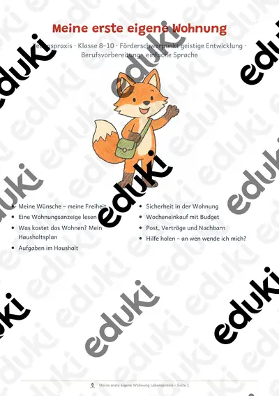
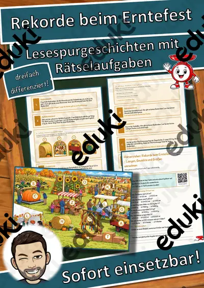
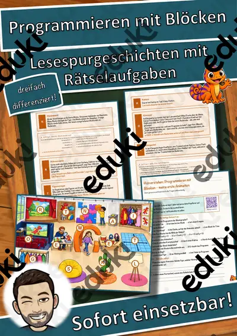

Valentinstag Weitermalbilder
Die Weitermalbilder, speziell für den Valentinstag, dienen als Inspiration für den Kunstunterricht, für Vertretungsstunden, für die Vorviertelstunde, zur Differenzierung für schnellere Schüler, oder einfach nur zum Spaß am (Aus)Malen. Unter https://eduki.com/de/material/115600/weitermalbilder lässt sich ergänzend ein MEGAPACK mit 50 Bilder erwerben. Das Megapack Weitermalbilder beeinhaltet 50 unterschiedliche Bilder zum Weitermalen, die sich einfach auf A4 ausdrucken, oder auf A3 größer kopieren lassen. Ich wünsche viel Freude mit dem Material. Über eine kleinen Beitrag für meine Kaffeekasse freue ich mich sehr: :) https://www.paypal.com/cgi-bin/webscr?cmd=_s-xclick&hosted_button_id=VQNS7ZDMJ83WY&source=url Danke!
Ähnliche Materialien

50 Weitermalbilder, Kunstideen, Vertretungsstunden, Kunst, Entspannung

Escape-Room Größen & Flächen Klasse 5 – Mathematik Klasse 5 Gymnasium: 6 Stationen, 2 Schlösser

Meine erste eigene Wohnung – Lebenspraxis in einfacher Sprache: 3 Niveaus, Rollenspiele, Test

Rekorde beim Erntefest – Längen, Gewichte und Größen umrechnen – Lesespurgeschichte mit Rätselaufgaben (Klasse 5)

Würfel-Pulli: Würfeln, malen, staunen, Klasse 1–4

Programmieren mit Blöcken – meine erste Animation – Lesespurgeschichte mit Rätselaufgaben (Klasse 5)

Impressionismus – Malen im Freien – Lesespurgeschichte mit Rätselaufgaben (Klasse 9)